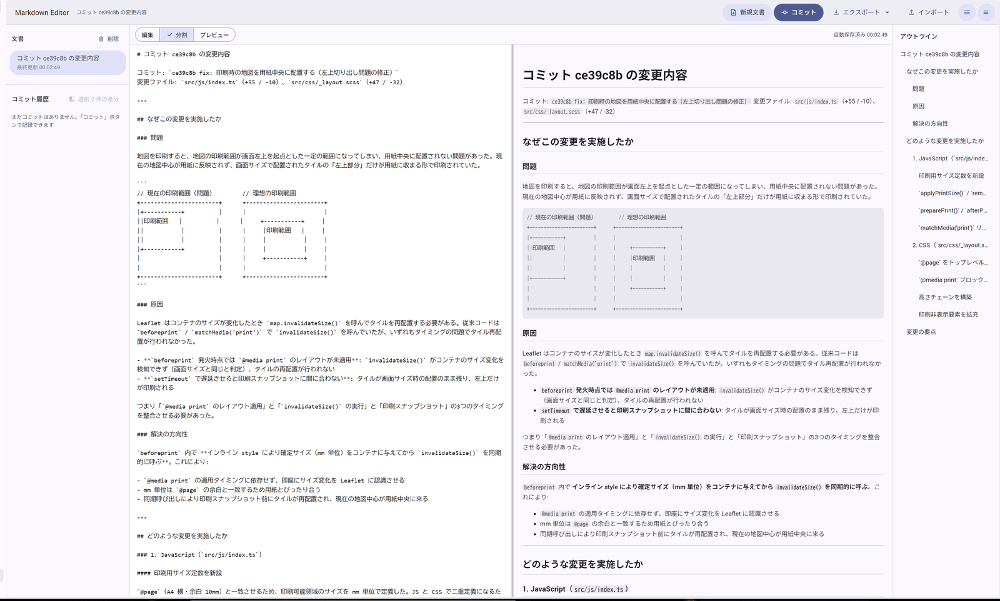
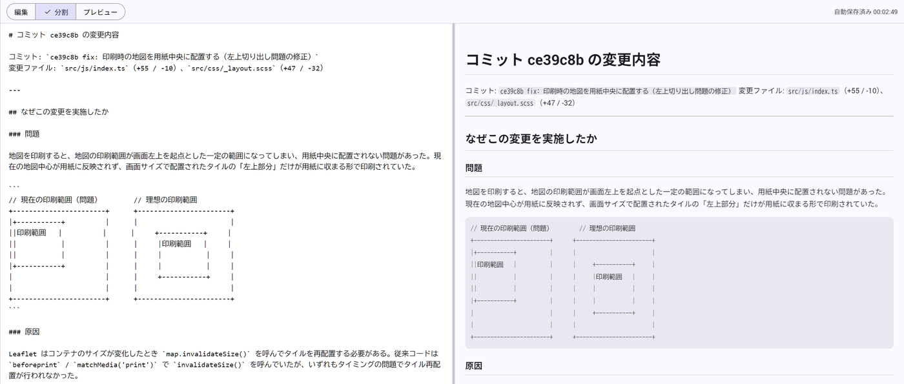
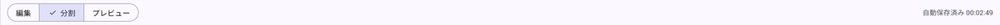
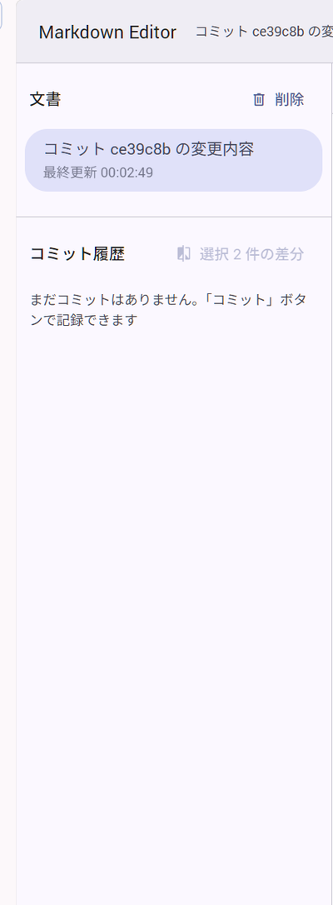
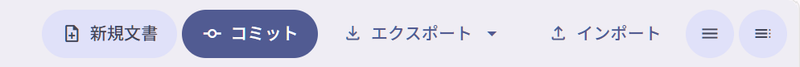
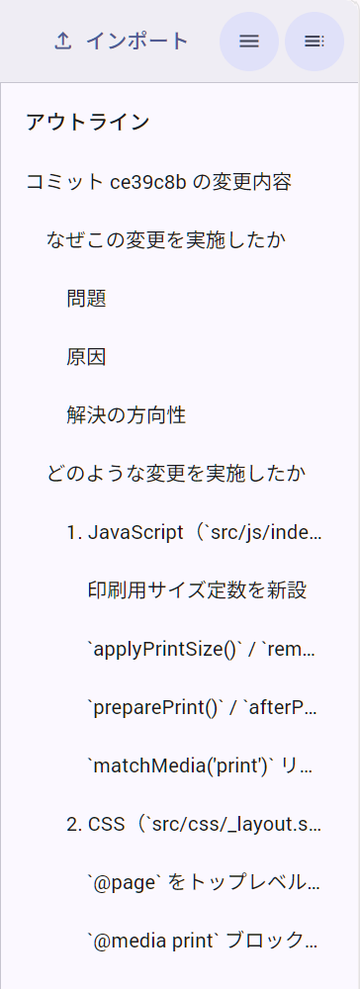

このドキュメントでは、本エディタの画面構成、リアルタイムプレビュー、バージョン履歴管理（コミット＆差分比較）、Word / Markdown 出力などの全機能をスクリーンショット付きでわかりやすく解説します。
エディタ画面は、ビジネスでの集中した執筆と直感的な操作性を両立する3ペイン構成になっています。

現在の文書名、新規文書作成、コミット記録、ファイル入出力（エクスポート・インポート）、サイドバー開閉ボタンが集約されています。
保存されている文書の一覧と、選択中文書のコミット履歴（過去のバージョン）を管理します。
左側に入力エリア、右側にリアルタイム描画プレビューを配置。スプリッターで比率を自由に変更できます。
Markdownの見出し構造から目次を自動生成し、目的の箇所へ1クリックでジャンプできます。
編集エリアに入力した Markdown テキストは、タイピングと同時に右側のプレビュー領域に即座に反映されます。

Markdown の最上位見出し（例: # コミット ce39c8b の変更内容）を記述すると、それが自動的に文書タイトルとして認識され、画面上部および左サイドバーのリストに反映されます。
エディタ上部のツールバーにあるセグメントボタンから、作業状況に応じて3つの表示モードを切り替えることができます。

Markdownの入力欄のみを全幅で表示します。長文執筆に集中したい場合に最適です。
入力エリアとプレビューを左右に並べて表示します。中央の境界線をドラッグして分割比率を調整できます。
レンダリング結果のみを全幅で表示します。完成した文書の通読や確認に適しています。
Git のようなバージョン管理機能を備えています。文章の節目ごとにスナップショットを「コミット」として記録し、過去の任意のバージョンと比較できます。

トップバーにある青い コミット ボタンをクリックします。
ダイアログが表示されるので、「〇〇章を追加」「タイポ修正」などのメッセージを入力して保存します。
コミット一覧から2つのチェックボックスを選択すると、選択 2 件の差分 ボタンが有効になります。クリックすると追加（緑）／削除（赤）をハイライトした差分画面が表示されます。
社内共有、報告書作成、バックアップ用途など、多彩なファイル形式に対応しています。

| 機能名 | 形式 | 利用用途・メリット |
|---|---|---|
| Markdown (.md) | テキスト形式 | 標準的なマークダウンファイルとして書き出します。GitHubや社内Wiki等への再利用に便利です。 |
| Word (.docx) | Wordドキュメント | 見出し・太字・箇条書き・表組みなどをMicrosoft Word文書へ自動変換して出力します。ビジネス提出用に最適です。 |
| バックアップ (JSON) | JSONファイル | 文書本文だけでなく、すべての「コミット履歴」を含めた完全なバックアップを保存します。 |
| インポート | .md / .txt / .json | PC内のMarkdownファイルや、保存しておいたバックアップJSONを読み込み、エディタに復元します。 |
Markdown本文内の見出し（#, ##, ###, ####）を解析し、右サイドバーに目次ツリーを自動構築します。

キーボードのみで効率的に操作するためのショートカットキーが用意されています。
| ショートカット | 機能説明 |
|---|---|
| Alt + 1 | 左側「文書管理サイドバー」の表示／非表示を切り替えます |
| Alt + 2 | 右側「アウトライン（目次）」の表示／非表示を切り替えます |
| Ctrl + S / Cmd + S | 文書を即座に手動保存します（自動保存も常時行われます） |
| Esc | 開いているダイアログ（差分表示や確認画面）やドロップダウンメニューを閉じます |